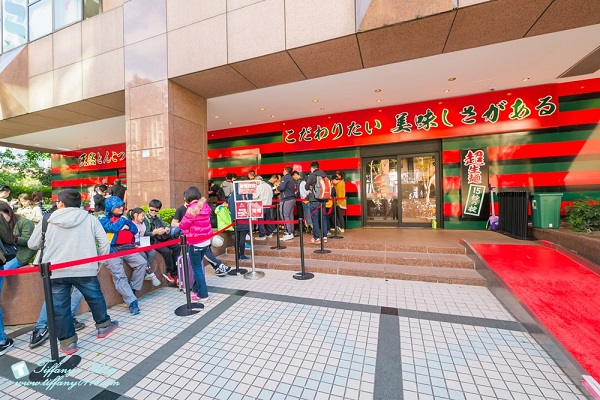
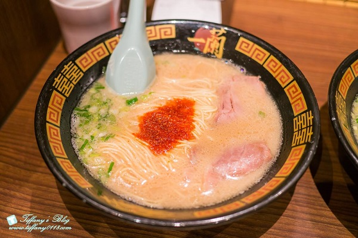
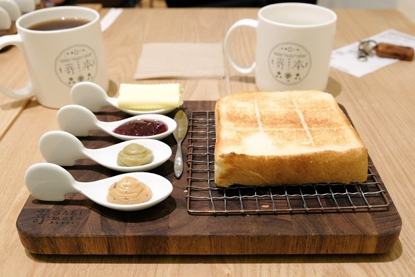
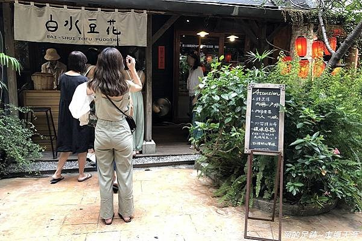
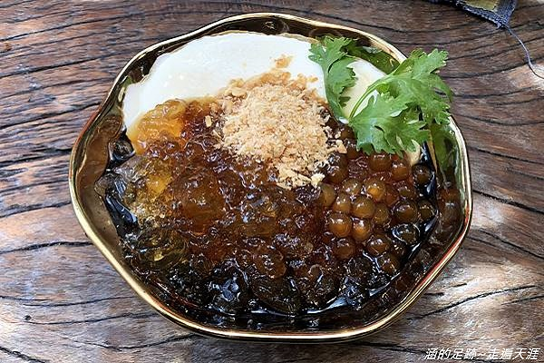

[食記] 台北小吃
台北的美食真的多！每次排行榜都有新東西出現，
快來看看2020上半年TOP 3美食你吃過幾家！
Top1:一蘭拉麵
 
台灣一蘭拉麵號稱完全移植日本一蘭拉麵，
不管是麵條還是最有名的天然豚骨湯頭，都是日本原汁原味。
為了因應日本與台灣氣候上的差異，
特別設置「製麵職人」常駐在台，
依據每日氣溫和濕度進行調整，製作出最好的「一蘭特製生麵」。
地址 : 台北市信義區松仁路97號
電話 : (02)2758-3868(不接受預約)
時間 : 24小時
Top2:嵜本 SAKImoto bakery 高級生吐司專門店（台北旗艦店）

日本超夯的「 嵜本高級生吐司專門店 」來台了！
因為第一間旗艦店的生意太好，所以隨即又在台北 101 插旗，
開了一間分店，讓更多人可以買到、吃到來自日本大阪的生吐司。
不過要內用的話，建議一定要事先線上訂位，
避免到了現場沒有位置！
地址：110 台北市信義區市府路 45 號 B1.47+48
電話：02 8101 7688
時間：11:00 – 21:30，週五週六延至 22:00
Top3:白水豆花
 